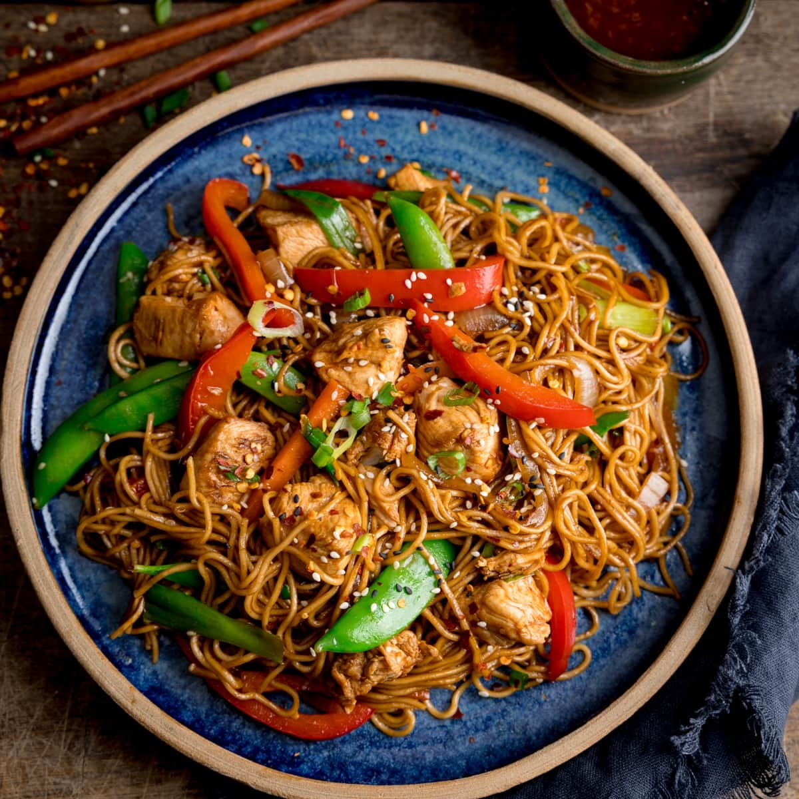

Lo mein
home

Description
Chinese style stir fried noodle with soy sauce
simple at home recipe to try, you can use any additional ingredients in your refrigerator!
Ingredients
- 6 ounces dried lo mein noodles
- 1 tablespoon less-sodium soy sauce
- 2 cloves garlic, minced
- 2 tablespoons chopped green onions
Cooking Steps
- Prepare noodles according to package directions. Drain; rinse with cold water until cool. Drain well. Use kitchen shears to cut noodles into smaller pieces.
- For vinaigrette, whisk together oil, vinegar, soy sauce, sugar, jalapeño, garlic, and peppercorns in a small bowl until sugar dissolves.
- In a serving bowl, toss noodles with vinaigrette until well coated. Top with peanuts, green onions, and cilantro.